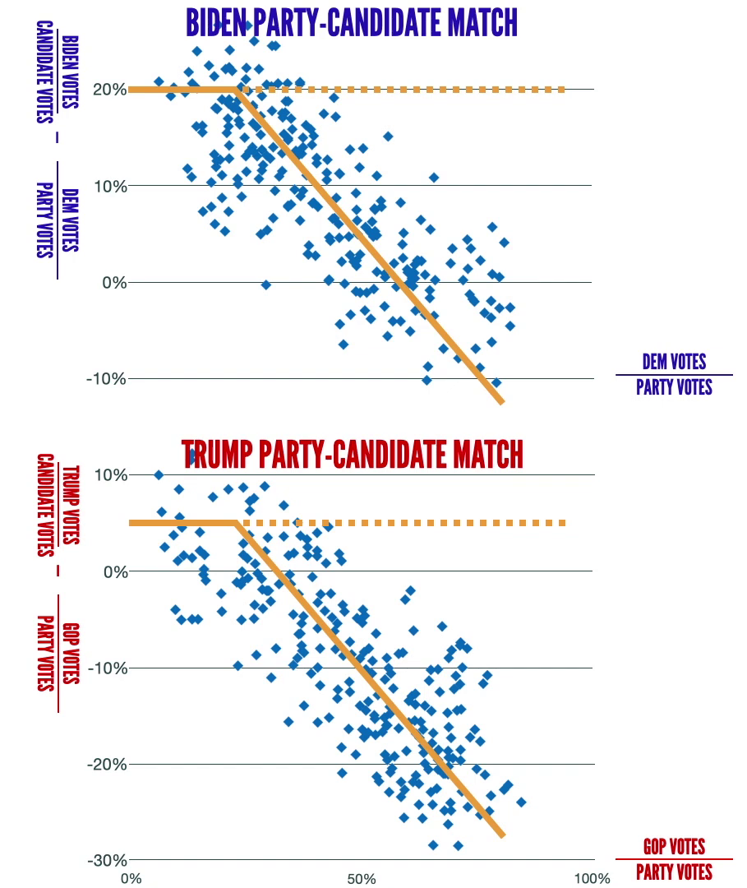

This gentleman:
has attempted to disprove the argument presented by this gentleman:
but he failed. Here is why.
He begins:
... they show several plots including this one, which is supposed to show some evidence of election fraud happening in the 2020 US election in the state of Michigan. ... The idea is this plot should be straight, instead you've got this down slope. And that is meant represent a net shift of votes that should have been for Donald Trump over to Biden. However if you plot exactly the same date from the same precinct from the same county for Biden (which I did,) you'd expect to see those votes showing up, there should be an anomaly going the other way. You do that plot: it looks exactly the same. This cannot represent a net movement of votes because both plots are the same.
In math/statistics speak: For a precinct, use the straight party vote as the mean (μ) political affiliation, and also the expected value. By subtracting the mean from presidential vote, we get an equivalent of the standard deviation for that precinct. (σ = X - μ) (By omitting the square and square root the direction is kept.)
In people speak:
The x-axis is a precincts affiliation to a party and the y-axis is
how much more/less it voted relatively for the respective candidate.